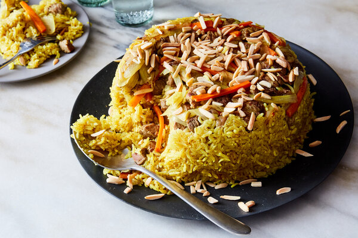

Maqloba Recipe (Upside-Down Chicken and Rice)

Description
An Arabic tradition, maqluba means “upside down” in Arabic and is a pot of stewed meat, rice and fried vegetables, cooked and flipped onto a serving dish to form an impressive tower. In this version, the rice is richly spiced with cinnamon, allspice and more, and the chicken simmers to tenderness as it gives its flavor to the rice.
Ingredients
- 1 medium eggplant (1 pound).
- Salt.
- 3.5 pounds bone-in chicken pieces.
- 1.5 teaspoons ground black pepper.
- 1 teaspoon ground cumin.
- 6 cloves.
- 6 green cardamom pods.
- 3 bay leaves.
- 2.5 cups long-grain rice, rinsed well and drained.
- 1 small onion, cut into large wedges.
- Vegetable or olive oil, as needed.
- 3 to 5 medium carrots, 2-or-3-inch pieces.
- 1 medium potato, 1/2-inch slices.
- ½ medium-head cauliflower, in florets.
- ¾ cup broken vermicelli noodles.
- 1 teaspoon ground turmeric.
- ¾ teaspoon ground cinnamon.
- ½ teaspoon ground allspice.
- ¼ teaspoon ground cloves.
- 3 garlic cloves, grated.
- ⅓ cup pine nuts.
- Plain yogurt, for serving (optional).
Preparation and cook
- Cut the eggplant into 1/2-inch-thick half-moons. Season well with salt, and let sit 30 minutes. Place the chicken in a large pot (a 10-inch, 5-quart size is ideal), and season well with salt and 1 teaspoon black pepper, ground cumin, cloves, cardamom pods and bay leaves (ideally, do this the day before). Pour 3 cups of boiling water over the rice. Soak for 10 minutes, then drain well.
- To the chicken, add the onion wedges, 1 tablespoon salt and 4 1/2 cups of water. Bring to a boil, covered, over high heat, then turn down to a simmer, and cook for 20 minutes. Drain the chicken, keeping the broth and discarding the onion and spices.
- Heat 1/2 inch of oil in a large skillet over medium-high heat until shimmering hot, then fry the carrots, in batches if necessary, turning occasionally until browned, about 4 minutes. Drain on paper towels, then season lightly with salt. Repeat with the potato, about 3 minutes per side. Repeat with the cauliflower, about 7 minutes per batch. Finally, press the eggplant with paper towel until dry, then fry the eggplant in one layer until browned, about 4 minutes per batch. Drain on paper towels, but don’t season. (If the eggplant is too oily, press on it with paper towels).
- Pour out the oil, keeping 2 1/2 tablespoons in the pan. Heat it over medium-high heat and add the vermicelli, stirring until browned, about 2 minutes. Add the drained rice and cook, stirring, to dry it out, about 4 minutes. Add 1 tablespoon salt, 1/2 teaspoon black pepper, the turmeric, cinnamon, allspice, ground cloves, Sazón and garlic, and cook, stirring, until very fragrant.
- Place the chicken back in the pot, skin side down. Place the vegetables on top, then rice. Pour in 4 cups of the chicken broth. Press down on the rice; add more broth or water if needed to bring the liquid barely to the level of the rice. Cover the pot and bring to a boil over high heat, then turn it down to medium low. After 10 minutes, carefully stir just the rice to evenly combine the harder rice on top. Repeat after another 10 minutes. After a total of 30 minutes, the rice should be cooked, but not soft, and the liquid should be absorbed.
- Place a very large serving dish on top of the pot, then, protecting your hands (and maybe with a partner), invert the pot onto the dish in one smooth motion. If there is liquid seeping out, spoon it out or soak it up with paper towels. Let the pot rest at least 5 minutes.
- Meanwhile, heat 2 tablespoons of oil in a small pan over medium-high heat until shimmering. Fry the pine nuts, stirring constantly, until browned, about 1 minute. Drain on paper towels.
- Lift off the pot to reveal the maqluba, and scatter the pine nuts all over. Serve with yogurt and chopped tomatoes, cucumbers and parsley on the side, seasoned with lemon, salt and olive oil.